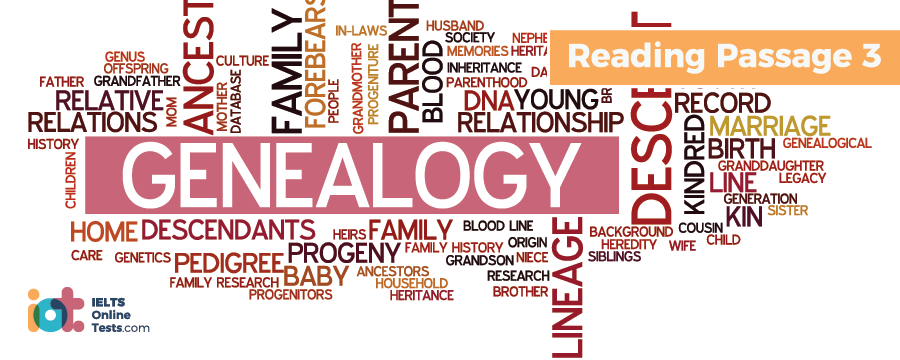

Part 1
READING PASSAGE 1
You should spend about 20 minutes on Questions 1-13, which are based on Reading Passage 1 below.
REIKI
A. The spiritual practice of Reiki was first introduced in early 20th century in Japan and continues to be used by its followers today with the intention of treating physical, emotional and mental imbalances and consequent ill-health. The principles of Reiki involve techniques employed by practitioners they say will channel healing energy through the subject’s body, and advocates hold that these techniques can also be used for self-healing. The name of the practice itself stems from two Japanese characters, pronounced ‘rei’ which translates to ‘unseen’ or ‘spiritual’ and ‘ki’ meaning ‘life force’ or ‘energy’.
B. According to Reiki philosophy, only by undergoing an attunement process performed by a Reiki Master is an individual able to access, then channel this positive energy within, this ability once established is considered to be enduring. Once attuned, it is said that an individual has the ability to allow energy to flow to weak or diseased areas of the body, so activating a natural healing process. Reiki energy is considered to be ‘intelligent energy’ in that it automatically flows to such areas; for this reason, practitioners believe that diagnosis of a specific problem is unnecessary beforehand and that the practice can be used as preventative medicine and encourage healing prior to the onset of tangible symptoms. Since healing initiated by Reiki treatment is entirely natural, many practitioners are confident that it can be used alongside any other type of treatment without adverse affect; however, others recommend that since the patient may undergo significant internal improvement for certain ailments – diabetes, for example – careful monitoring is required since such improvements may establish a need for an alteration in medication requirements.
C. A ‘whole body’ Reiki treatment session typically lasts between to 90 minutes. The subject is required to lie down – often on a treatment table – clothed in comfortable and loose fitting attire. Treatment may involve the practitioner placing their hands on the recipient in a variety of positions; however, some therapists take a non-touching approach, holding their hands a few centimeters away from the body. Hands are usually held in one position for up to 5 minutes before moving on to the next part of the body; between 12 and 20 hand positions are generally used. Those who have undergone a Reiki treatment session often state that they experienced a pleasant warmness in the area of focus and a feeling of contentment and relaxation throughout the session.
D. The healing energy is said to originate in the universe itself and is not the passing of personal energy from practitioner to patient; it is therefore thought to be inexhaustible and the personal well-being of the practitioner uncompromised. While some masters and teachers hold that subjects must be receptive to the concept in order for energy to flow, others believe that the attitude of the patient is of no consequence and that benefits will follow regardless; for this reason, those following the latter school of thought say that since Reiki requires no conscious belief it can also benefit the well-being of animals and plant life.
E. Controversy surrounds the practice of Reiki, some in opposition as they say that Reiki may offer only a perceived improvement in health and therefore only a ‘placebo’ effect. Whilst the practice of Reiki itself is not necessarily considered potentially harmful, some medical practitioners are concerned that its benefits may be over-estimated by patients and that, as a result, they’ may ignore or bandon conventional treatments. Others argue against the reliability of Reiki due to the lack of regulation of practitioners, holding that patients may be left vulnerable to illegitimate therapists who lack knowledge and skill. While Reiki is not connected to any particular religious doctrine, some religious leaders oppose the practice for spiritual reasons; however, others hold that the meditative principles involved in treatment have enhanced their own ability to explore and embrace their own particular religion.
F. Limited scientific studies in the authenticity of Reiki have been conducted. During research conducted by the Institute of Neurological Studies at South Glasgow University Hospital it was observed that there was a significant decrease in heart rate and blood pressure amongst subjects receiving 30 minutes of Reiki treatment as opposed to a group receiving placebo treatment of 30 minutes rest. Since the test group consisted of a small number of subjects just 45 – the research recommendations concluded a requirement for further studies. A similarly small preliminary study into the potential effects of Reiki on patients suffering mild dementia, conducted in the USA, tentatively suggested that treatment had a positive effect on the subjects’ memory abilities; however, research limitations included insufficient analysis of potential placebo affects.
G. Other studies have also attempted to determine correlation between Reiki treatment and improvement in cancer and stroke patients. Whilst investigations into the first condition indicated a seemingly positive effect on degrees of fatigue, pain and stress experienced by sufferers, the second project failed to reveal a link between treatment and improvement in the subjects’ condition and rehabilitation. Theories have been put forward that the benefits of energy treatments such as Reiki may be scientifically attributed to the effect of electromagnetic fields; however, the majority researchers agree that more extensive investigation is required.
Part 2
READING PASSAGE 2
You should spend about 20 minutes on Questions 14-27, which are based on Reading Passage 2 below.
SCULPTURE
A. Sculpture, the practice of creating a three-dimensional object for artistic and aesthetic purposes, dates back as far as prehistoric times. Since objects created are intended to be enduring, traditionally sculptures have been forged from durable materials such as bronze, stone, marble and jade; however, some branches of the art also specialise in creating figurines of a more ephemeral nature, ice sculpture, for example. The practice of sculpting in many countries has traditionally been associated with religious philosophy; for example, in Asia many famous sculptures are related to Hinduism or Buddhism.
B. In Africa, perhaps more than any other region in the world, three-dimensional artwork is favoured and given more emphasis than two dimensional paintings. Whilst some experts hold that the art of sculpture in the continent dates back to the Nokcivilisation of Nigeria in 500 BC, this is disputed due to evidence of the art’s existence in Pharaonic Africa.
C. To the expert eye, African art is clearly defined by the region from which it is from and easily identifiable from the differences in technique used and material from which it is made. Figurines from the West African region are sculpted in two distinctly different forms. The first is characterised by angular forms and features with elongated bodies, such sculptures being traditionally used in religious rituals. Conversely, the traditional wood statues of the Mande speaking culture possess cylindrical arms and legs with broad, flat surfaces. Metal sculptures which hail from the eastern regions of West Africa, are heralded by many as amongst the most superior art forms ever crafted.
D. Central African sculpture may be a little more difficult to identify for the novice observer as a wider variety of materials may be used, ranging from wood to ivory, stone or metal. However, despite tills, the distinct style of usage of smooth lines and circular forms still helps to define the origin of such works. In both Eastern and Southern Africa, typically, art depicts a mixture of human and animal features. Art from the former region Is usually created in the form of a pole carved in human shape and topped with a human or animal image which has a strong connection with death, burial and the spiritual world. Such creations are less recognised as art in the traditional sense than those from other parts of Africa. In Southern Africa, the human/animal hybrid representations are fashioned from clay, the oldest known examples dating back to from between 400 and 600 A.D.
E. Although these distinct and defining regional differences in artistic expression exist, there are also universal similarities which define African art as a whole. Primarily a common characteristic is that focus is predominantly on representation of the human form. A second common trait of African art is that it is often inspired by a ceremonial or performance-related purpose; the meaning behind the art and its purpose often intended to be interpreted in a different way depending on an individual’s age, gender or even social and educational status.
F. Throughout the African continent, artworks tend to be more abstract in nature than intending to present a realistic and naturalistic portrayal of the subject in question. Artists such as Picasso, Van Gogh and Gauguin are said to have been influenced and inspired by African art. Its ability to stimulate emotional reaction and imagination generated a great deal of interest from western artists at the beginning of the 20th century. As a result, new European works began to emerge which were of a more abstract nature than previously conceived. More intellectually and emotionally stimulating art was born than had been seen before in a culture which had traditionally faithfully represented and depicted the true and exact form of its subjects.
G. The ‘Modernism’ movement of the 20th century embraced innovation in literature and art, its devotees wishing to move beyond realism in artistic expression. The sculptor Henry Spencer Moore, born in 1898 in Yorkshire, was one of the key players involved in introducing and developing his own particular style of modernism to the British art world. He is best known for his abstract bronze sculptures of the human form, many critics drawing parallels between the undulating landscapes and hills of his home county Yorkshire and the shapes and lines of his sculptures.
H. By the 1950s, Moore’s work was increasingly in demand and he began to secure high profile commissions including an artwork for the UNESCO building in Paris. By the end of Moore’s career, due to his popularity and the scale of the projects he undertook, the sculptor was extremely affluent; however, a huge proportion of his wealth was donated to the Henry Moore Foundation established with the aim of supporting education and promotion of the arts. The foundation is a registered charity and has continued to offer funding to a wide range of projects including grants to arts institutions and bursaries and fellowships for students and artists since Moore’s death in 1986.
Part 3
READING PASSAGE 3
You should spend about 20 minutes on Questions 28 – 40, which are based on Reading Passage 3 below.

GENEALOGY
A. Genealogy, the study of tracing family connections and relationships through history – so building a cohesive family tree, has become an increasingly popular hobby from non-specialist enthusiasts over recent decades. The introduction of the Internet has, in many ways, spurred interest levels since historical information has been made far more accessible than previously. Experts warn, however, that sources obtained from the internet must be considered with caution as they may often contain inaccuracies, often advising novice genealogists to join a family history society where they are able to learn useful skills from experienced researchers.
B. Originally, prior to developing a more mainstream following, the practice of genealogy focused on establishing the ancestral links of rulers and noblemen often with the purpose of disputing or confirming the legitimacy of inherited rights to wealth or position. More recently, genealogists are often interested in not only where and when previous generations of families lived but also details of their lifestyle and motivations, interpreting the effects of law, political restrictions, immigration and the social conditions on an individual’s or family’s behaviour at the given time. Genealogy searches may also result in location of living relatives and consequently family reunions, in some cases helping to reunite family members who had been separated in the past due to fostering/adoptlon, migration or war.
C. In Australia, there has been a great deal of interest of late, from families wishing to trace their links to the early settlers. As a result of the loss of the American colonies in the 1700s, Britain was in need of an alternative destination for prisoners who could not be accommodated in the country’s overcrowded penal facilities. In 1787, the ‘First Fleet’ which consisted of a flotilla of ships carrying just over 1300 people (of which 753 were convicts or their children and the remainder marines, officers and their family members) left Britain’s shores for Australia. On January 26, 1788 – now celebrated as Australia Day – the fleet landed at Sydney Cove and the first steps to European settlement began.
D. Genealogy research has led to a shift in attitudes towards convict heritage amongst contemporary Australian society, as family members have been able to establish that their ancestors were, in fact, not hardened and dangerous criminals, but had, in most cases, been harshly punished for minor crimes inspired by desperation and dire economic circumstances. So dramatic has the shift in attitudes been that having family connections to passengers on the ‘First Fleet’ is considered nothing less than prestigious. Convicts Margaret Dawson and Elizabeth Thakery were amongst the first European women to ever set foot on Australian soil. Details about the former, whose initial death sentence passed for stealing clothes from her employer was commuted to deportation, and the latter expelled for stealing handkerchiefs along with others of similar fate are now available on the internet for eager descendants to track.
E. Although many of the deported convicts were forbidden to return to Britain, others such as Dawson, were, in theory, expelled for a given term. In reality, however, the costs of attempting to return to the mother country were well beyond the means of the majority. Genealogists now attribute the successful early development of Australia to such ex-convicts who decided to contribute fully to society once their sentence had been served. Many rewards were available to prisoners who displayed exemplary behaviour, including land grants of 30 acres or more, tools for developing and farming the land and access to convict labour. Genealogy studies also show that many former prisoners went on to hold powerful positions in the newly forming Australia society, examples being Francis Greenway – a British architect expelled on conviction of fraud – who went on to design many of Sydney’s most prominent colonial buildings, and Alexander Munro, transported after stealing cheese at the age of 15, who would later build Australia’s first gas works and hold the position of Town Mayor.
F. In North America, the Mormon Church, headquartered in Salt Lake City, Utah, holds wo major genealogical databases, the International Genealogical Index and the Ancestral File, which contain records of hundreds of million individuals who lived between 1500 and 1900 in the United States, Canada and Europe. Resources available to genealogy enthusiasts include the Salt Lake City based Family History Library and more than 4000 branches where microfilms and microfiches can be rented for research and the newer Family Search internet site which provides open access to numerous databases and research sources. Such data sharing practices are central and crucial to genealogical research and the internet has proven to be a major tool in facilitating ease of transfer of information in formats suitable for use in forums and via email. The global level of interest in and demand for such information has proven so intense, that traffic load on release of sources such as Family Search and the British Census for 1901 led to temporary collapse of the host servers.
G. Experts advise that reliability of sources used for genealogical research should be evaluated in light of four factors which may influence their accuracy, these being the knowledge of the informant, the bias and mental state of the informant, the passage of time and potential for compilation error. First, genealogists should consider who the information was provided by and what he or she could be ascertained to have known. For example, a census record alone is considered unreliable as no named source for the information is likely to be found. A death certificate signed by an identified doctor, however, can be accepted as more reliable. In the case of bias or mental state, researchers are advised to consider that even when information is given by what could be considered a reliable source, that there may have been motivation to be untruthful – continuing to claim a government benefit or avoidance of taxation, for example.
H. Generally, data recorded at the same time or close to the event being researched is considered to be more reliable than records written at a later point in time, as – while individuals may intend to give a true representation of events – factual information may be misrepresented due to lapses in memory and forgotten details. Finally, sources may be classified as either original or derivative. The latter refers to photocopies, transcriptions, abstracts, translations, extractions, and compilations and has more room for error due to possible misinterpretations, typing errors or loss of additional and crucial parts of the original documentation.
Part 1
Questions 1-3
Choose THREE letters A-H.
Write your answers in boxes 1- 3 on your answer sheet
N.B. Your answers may be given in any order
Which THREE of the following statements are true of Reiki?
Questions 4-9
Reading Passage 1 has seven paragraphs A-G.
Which paragraph contains the following information? You can use each paragraph more than once.
4.
5.
6.
7.
8.
9.
Questions 10-13
According to the information in Reading Passage 1, classify the following research findings into the benefits of Reiki as relating to
| A. | The Institute of Neurological Studies | |
| B. | Research conducted in the USA | |
| C. | Cancer research | |
| D. | Stroke research |
Write the correct letter A, B, C or D in boxes 10–13 your answer sheet
10.
11.
12.
13.
Part 2
Questions 14 –17
Complete the summary
Choose ONE WORD ONLY from the passage for each answer.
Write your answers in boxes 14-17 on your answer sheet.
In Africa, sculpture is more predominant and more highly 14 than canvas art, for example.
In Asia, many prestigious works are connected to 15 values.
Sculpture is an ancient art in which figurines are created from materials which are, in the main, 16 to ensure longevity of the art form; however, though more 17 , materials such as ice are used in certain spheres.
Questions 18-22
Complete the table
Choose NO MORE THAN TWO WORDS from the passage for each answer.
Write your answers in boxes 18-22 on your answer sheet.
| REGIONAL AFRICAN ART | ||
| Region | Style | Additional Information |
| Eastern Africa | Subjects similar to the 18 area of the country. | Less sought-after than other styles of African art. |
| Southern Africa | Artwork representing human & animal form | Made from 19 |
Western Africa | Style 1 Sharp lines, long bodies | Conventionally made for the purpose of 20 |
| Style 2 Cylindrical, broad and flat lines crafted from 21 | Made by Mande speakers | |
| Central Africa | Smooth lines & circular forms | Often more difficult to recognise due to the diversity of 22 used. |
Questions 23-27
Answer the questions below using NO MORE THAN THREE WORDS from the passage for each answer.
Write your answers in boxes 23-27 on your answer sheet.
Verification of art in which civilisation sheds doubt on the theory that African art dates back to the Nok period?
23
What material is used for the African sculptures many consider to be the best?
24
What ceremonial event are the creations from Eastern Africa connected with?
25
Due to African influence, what did Western art become that allowed it to be more intellectually and emotionally stimulating?
26
What did Moore most often depict which brought him the greatest recognition?
27
Part 3
Questions 28-32
Reading Passage 3 has eight paragraphs A-H.
Choose the correct heading for paragraphs B and D-G from the list of headings below.
Write the correct number i to ix in boxes 28-32 on your answer sheet.
| List of Headings | ||
| i. | An Embarrassing Heritage | |
| ii. | Assessing Validity | |
| iii. | Diversity of Application | |
| iv. | Interpretation Errors | |
| v. | Past Usage | |
| vi. | Useful Sources | |
| vii. | Australasian Importance | |
| viii. | Changing Viewpoints | |
| ix. | Significant Roles | |
Example: Paragraph C; Answer: vii
28.
29.
30.
31.
32.
Questions 33 – 36
Do the following statements agree with the information given in Reading Passage 3?
In boxes 33 – 36 on your answer sheet, write
| TRUE. | if the statement agrees with the information | |
| FALSE. | if the statement contradicts the information | |
| NOT GIVEN. | If there is no information on this |
33.
34.
35.
36.
Questions 37-40
Choose the correct letter A, B, C or D
Write your answers in boxes 37-40 on your answer sheet